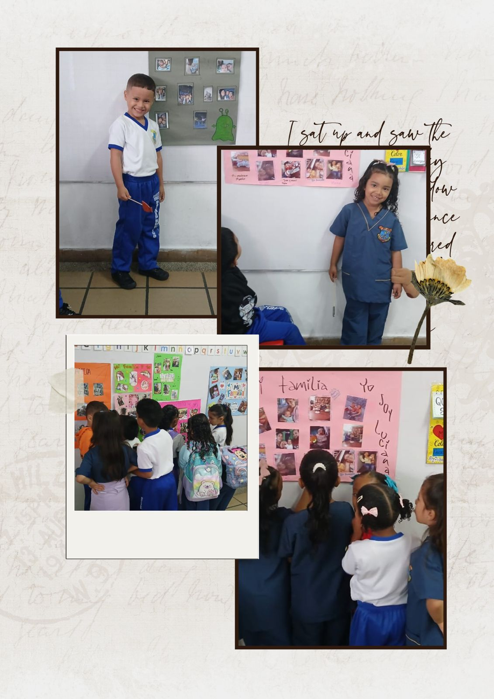

Fecha
27 de Mayo
Lugar
Sede Francisco J. Ruiz
Tipo
Observación
Participante
Valentina Caldon López
🖍️
Observación
La docente realizó una actividad sobre el reconocimiento de la familia y la expresión oral, donde los niños expusieron con carteleras quiénes conforman su familia y compartieron experiencias de su entorno cercano.
🤝
Actividad
Durante la actividad hubo participación activa, escucha y acompañamiento de la docente para fortalecer la confianza y la comunicación de los estudiantes.

🗣️
Interacción
Los estudiantes lograron expresar sus ideas, vivencias y emociones, fortaleciendo su capacidad comunicativa en un ambiente seguro y participativo gracias al material de apoyo visual.